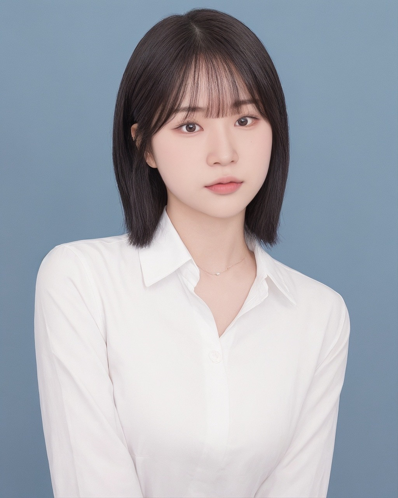

ABOUT ME
- 스스로 타협하지 않고 끝까지 파는 끈기와 집요함이 있습니다.
- B2B 환경에서의 디자인 업무를 수행해왔습니다.
다른 기업의 요구와 니즈를 파악하고 그에 맞는 디자인 솔루션을 개발한 경험이 있습니다. - 사용자가 겪고 있는 문제와 이를 해결하기 위해 끊임없이 고민하고 확인하며 이를 바탕으로 시각적으로 해결방안을 제안하는 능력을 가지고 있습니다.
저의 경험과 능력은 아래와 같습니다.
CAPABILITY
UI DESIGN
WEB DESIGN
MY VALUES

'스스로 타협하지 않고 끝까지 파는 끈기와 집요함'
프로젝트를 맡으면 기업이나 고객의 요구와 목표를 완벽히 이해할 때까지 깊이 파고들고, 디자인이 클라이언트의 요구와 완벽하게 일치할 때까지 업무에 전념했습니다. 이로써 동기부여와 긍정적인 영향력을 주며, 문제 해결을 위해 끊임없이 노력하고 집요함을 갖춘 자세를 가지고 있습니다.

'팔로워십'
회사 조직은 협업과 소통이 중요하며, 제 강점은 협업 환경에서의 팔로워십입니다. 리더와 팔로워 역할을 유연하게 수행하며, 팀 내외와의 원활한 커뮤니케이션과 신뢰 관계 형성에 노력합니다.